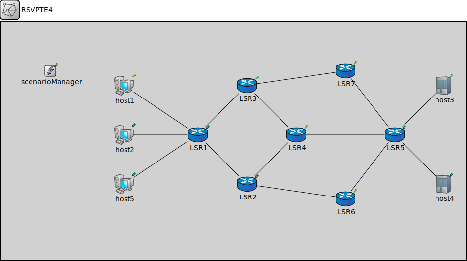

Package: inet.examples.mpls.testte_failure
RSVPTE4
networkExample network to demonstrate Rsvp-TE.
See the README file in the model directory for scenario description.
Usage diagram
The following diagram shows usage relationships between types. Unresolved types are missing from the diagram.
Properties
| Name | Value | Description |
|---|---|---|
| isNetwork |
Unassigned submodule parameters
| Name | Type | Default value | Description |
|---|---|---|---|
| LSR1.status.initialStatus | string | "UP" |
TODO @signal, @statistic |
| LSR1.interfaceTable.displayAddresses | bool | false |
whether to display IP addresses on links |
| LSR1.ted.interfaceTableModule | string |
The path to the InterfaceTable module |
|
| LSR1.ted.routingTableModule | string | ||
| LSR1.linkStateRouting.interfaceTableModule | string |
The path to the InterfaceTable module |
|
| LSR1.linkStateRouting.routingTableModule | string | ||
| LSR1.linkStateRouting.tedModule | string | ||
| LSR1.rsvp.interfaceTableModule | string |
The path to the InterfaceTable module |
|
| LSR1.rsvp.routingTableModule | string | ||
| LSR1.rsvp.libTableModule | string | ||
| LSR1.rsvp.tedModule | string | ||
| LSR1.rsvp.traffic | xml | xml(" |
specifies paths to set up |
| LSR1.rsvp.helloInterval | double | ||
| LSR1.rsvp.helloTimeout | double | ||
| LSR1.tn.displayStringTextFormat | string | "processed %p pk (%l)" |
determines the text that is written on top of the submodule |
| LSR1.tn.forwardServiceRegistration | bool | true | |
| LSR1.tn.forwardProtocolRegistration | bool | true | |
| LSR1.ipv4.routingTable.interfaceTableModule | string |
The path to the InterfaceTable module |
|
| LSR1.ipv4.routingTable.routerId | string | "auto" |
for routers, the router id using IPv4 address dotted notation; specify "auto" to select the highest interface address; should be left empty ("") for hosts |
| LSR1.ipv4.routingTable.netmaskRoutes | string | "*" |
maintain netmask routes for interfaces |
| LSR1.ipv4.routingTable.forwarding | bool | true |
turns IP forwarding on/off |
| LSR1.ipv4.routingTable.multicastForwarding | bool | false |
turns multicast forwarding on/off |
| LSR1.ipv4.routingTable.useAdminDist | bool | false |
Use Cisco like administrative distances |
| LSR1.ipv4.routingTable.routingFile | string | "" |
routing table file name |
| LSR1.ipv4.natTable.networkProtocolModule | string | "^.ip" | |
| LSR1.ipv4.natTable.config | xml | xml(" |
XML configuration parameters for network address translation |
| LSR1.ipv4.up.displayStringTextFormat | string | "processed %p pk (%l)" |
determines the text that is written on top of the submodule |
| LSR1.ipv4.up.forwardServiceRegistration | bool | true | |
| LSR1.ipv4.up.forwardProtocolRegistration | bool | true | |
| LSR1.ipv4.icmp.interfaceTableModule | string |
The path to the InterfaceTable module |
|
| LSR1.ipv4.icmp.routingTableModule | string | ||
| LSR1.ipv4.icmp.crcMode | string | "declared" | |
| LSR1.ipv4.icmp.quoteLength | int | 8B |
Number of bytes from original packet to quote in ICMP reply |
| LSR1.ipv4.mp.displayStringTextFormat | string | "processed %p pk (%l)" |
determines the text that is written on top of the submodule |
| LSR1.ipv4.mp.forwardServiceRegistration | bool | true | |
| LSR1.ipv4.mp.forwardProtocolRegistration | bool | true | |
| LSR1.ipv4.lp.displayStringTextFormat | string | "processed %p pk (%l)" |
determines the text that is written on top of the submodule |
| LSR1.ipv4.lp.forwardServiceRegistration | bool | true | |
| LSR1.ipv4.lp.forwardProtocolRegistration | bool | true | |
| LSR1.nm.displayStringTextFormat | string | "processed %p pk (%l)" |
determines the text that is written on top of the submodule |
| LSR1.nm.forwardServiceRegistration | bool | true | |
| LSR1.nm.forwardProtocolRegistration | bool | true | |
| LSR1.mpls.interfaceTableModule | string |
The path to the InterfaceTable module |
|
| LSR1.mpls.libTableModule | string | ||
| LSR1.libTable.config | xml | xml(" |
table contents to be loaded on startup |
| LSR1.ml.displayStringTextFormat | string | "processed %p pk (%l)" |
determines the text that is written on top of the submodule |
| LSR1.ml.forwardServiceRegistration | bool | true | |
| LSR1.ml.forwardProtocolRegistration | bool | true | |
| LSR2.status.initialStatus | string | "UP" |
TODO @signal, @statistic |
| LSR2.interfaceTable.displayAddresses | bool | false |
whether to display IP addresses on links |
| LSR2.ted.interfaceTableModule | string |
The path to the InterfaceTable module |
|
| LSR2.ted.routingTableModule | string | ||
| LSR2.linkStateRouting.interfaceTableModule | string |
The path to the InterfaceTable module |
|
| LSR2.linkStateRouting.routingTableModule | string | ||
| LSR2.linkStateRouting.tedModule | string | ||
| LSR2.rsvp.interfaceTableModule | string |
The path to the InterfaceTable module |
|
| LSR2.rsvp.routingTableModule | string | ||
| LSR2.rsvp.libTableModule | string | ||
| LSR2.rsvp.tedModule | string | ||
| LSR2.rsvp.traffic | xml | xml(" |
specifies paths to set up |
| LSR2.rsvp.helloInterval | double | ||
| LSR2.rsvp.helloTimeout | double | ||
| LSR2.tn.displayStringTextFormat | string | "processed %p pk (%l)" |
determines the text that is written on top of the submodule |
| LSR2.tn.forwardServiceRegistration | bool | true | |
| LSR2.tn.forwardProtocolRegistration | bool | true | |
| LSR2.ipv4.routingTable.interfaceTableModule | string |
The path to the InterfaceTable module |
|
| LSR2.ipv4.routingTable.routerId | string | "auto" |
for routers, the router id using IPv4 address dotted notation; specify "auto" to select the highest interface address; should be left empty ("") for hosts |
| LSR2.ipv4.routingTable.netmaskRoutes | string | "*" |
maintain netmask routes for interfaces |
| LSR2.ipv4.routingTable.forwarding | bool | true |
turns IP forwarding on/off |
| LSR2.ipv4.routingTable.multicastForwarding | bool | false |
turns multicast forwarding on/off |
| LSR2.ipv4.routingTable.useAdminDist | bool | false |
Use Cisco like administrative distances |
| LSR2.ipv4.routingTable.routingFile | string | "" |
routing table file name |
| LSR2.ipv4.natTable.networkProtocolModule | string | "^.ip" | |
| LSR2.ipv4.natTable.config | xml | xml(" |
XML configuration parameters for network address translation |
| LSR2.ipv4.up.displayStringTextFormat | string | "processed %p pk (%l)" |
determines the text that is written on top of the submodule |
| LSR2.ipv4.up.forwardServiceRegistration | bool | true | |
| LSR2.ipv4.up.forwardProtocolRegistration | bool | true | |
| LSR2.ipv4.icmp.interfaceTableModule | string |
The path to the InterfaceTable module |
|
| LSR2.ipv4.icmp.routingTableModule | string | ||
| LSR2.ipv4.icmp.crcMode | string | "declared" | |
| LSR2.ipv4.icmp.quoteLength | int | 8B |
Number of bytes from original packet to quote in ICMP reply |
| LSR2.ipv4.mp.displayStringTextFormat | string | "processed %p pk (%l)" |
determines the text that is written on top of the submodule |
| LSR2.ipv4.mp.forwardServiceRegistration | bool | true | |
| LSR2.ipv4.mp.forwardProtocolRegistration | bool | true | |
| LSR2.ipv4.lp.displayStringTextFormat | string | "processed %p pk (%l)" |
determines the text that is written on top of the submodule |
| LSR2.ipv4.lp.forwardServiceRegistration | bool | true | |
| LSR2.ipv4.lp.forwardProtocolRegistration | bool | true | |
| LSR2.nm.displayStringTextFormat | string | "processed %p pk (%l)" |
determines the text that is written on top of the submodule |
| LSR2.nm.forwardServiceRegistration | bool | true | |
| LSR2.nm.forwardProtocolRegistration | bool | true | |
| LSR2.mpls.interfaceTableModule | string |
The path to the InterfaceTable module |
|
| LSR2.mpls.libTableModule | string | ||
| LSR2.libTable.config | xml | xml(" |
table contents to be loaded on startup |
| LSR2.ml.displayStringTextFormat | string | "processed %p pk (%l)" |
determines the text that is written on top of the submodule |
| LSR2.ml.forwardServiceRegistration | bool | true | |
| LSR2.ml.forwardProtocolRegistration | bool | true | |
| LSR3.status.initialStatus | string | "UP" |
TODO @signal, @statistic |
| LSR3.interfaceTable.displayAddresses | bool | false |
whether to display IP addresses on links |
| LSR3.ted.interfaceTableModule | string |
The path to the InterfaceTable module |
|
| LSR3.ted.routingTableModule | string | ||
| LSR3.linkStateRouting.interfaceTableModule | string |
The path to the InterfaceTable module |
|
| LSR3.linkStateRouting.routingTableModule | string | ||
| LSR3.linkStateRouting.tedModule | string | ||
| LSR3.rsvp.interfaceTableModule | string |
The path to the InterfaceTable module |
|
| LSR3.rsvp.routingTableModule | string | ||
| LSR3.rsvp.libTableModule | string | ||
| LSR3.rsvp.tedModule | string | ||
| LSR3.rsvp.traffic | xml | xml(" |
specifies paths to set up |
| LSR3.rsvp.helloInterval | double | ||
| LSR3.rsvp.helloTimeout | double | ||
| LSR3.tn.displayStringTextFormat | string | "processed %p pk (%l)" |
determines the text that is written on top of the submodule |
| LSR3.tn.forwardServiceRegistration | bool | true | |
| LSR3.tn.forwardProtocolRegistration | bool | true | |
| LSR3.ipv4.routingTable.interfaceTableModule | string |
The path to the InterfaceTable module |
|
| LSR3.ipv4.routingTable.routerId | string | "auto" |
for routers, the router id using IPv4 address dotted notation; specify "auto" to select the highest interface address; should be left empty ("") for hosts |
| LSR3.ipv4.routingTable.netmaskRoutes | string | "*" |
maintain netmask routes for interfaces |
| LSR3.ipv4.routingTable.forwarding | bool | true |
turns IP forwarding on/off |
| LSR3.ipv4.routingTable.multicastForwarding | bool | false |
turns multicast forwarding on/off |
| LSR3.ipv4.routingTable.useAdminDist | bool | false |
Use Cisco like administrative distances |
| LSR3.ipv4.routingTable.routingFile | string | "" |
routing table file name |
| LSR3.ipv4.natTable.networkProtocolModule | string | "^.ip" | |
| LSR3.ipv4.natTable.config | xml | xml(" |
XML configuration parameters for network address translation |
| LSR3.ipv4.up.displayStringTextFormat | string | "processed %p pk (%l)" |
determines the text that is written on top of the submodule |
| LSR3.ipv4.up.forwardServiceRegistration | bool | true | |
| LSR3.ipv4.up.forwardProtocolRegistration | bool | true | |
| LSR3.ipv4.icmp.interfaceTableModule | string |
The path to the InterfaceTable module |
|
| LSR3.ipv4.icmp.routingTableModule | string | ||
| LSR3.ipv4.icmp.crcMode | string | "declared" | |
| LSR3.ipv4.icmp.quoteLength | int | 8B |
Number of bytes from original packet to quote in ICMP reply |
| LSR3.ipv4.mp.displayStringTextFormat | string | "processed %p pk (%l)" |
determines the text that is written on top of the submodule |
| LSR3.ipv4.mp.forwardServiceRegistration | bool | true | |
| LSR3.ipv4.mp.forwardProtocolRegistration | bool | true | |
| LSR3.ipv4.lp.displayStringTextFormat | string | "processed %p pk (%l)" |
determines the text that is written on top of the submodule |
| LSR3.ipv4.lp.forwardServiceRegistration | bool | true | |
| LSR3.ipv4.lp.forwardProtocolRegistration | bool | true | |
| LSR3.nm.displayStringTextFormat | string | "processed %p pk (%l)" |
determines the text that is written on top of the submodule |
| LSR3.nm.forwardServiceRegistration | bool | true | |
| LSR3.nm.forwardProtocolRegistration | bool | true | |
| LSR3.mpls.interfaceTableModule | string |
The path to the InterfaceTable module |
|
| LSR3.mpls.libTableModule | string | ||
| LSR3.libTable.config | xml | xml(" |
table contents to be loaded on startup |
| LSR3.ml.displayStringTextFormat | string | "processed %p pk (%l)" |
determines the text that is written on top of the submodule |
| LSR3.ml.forwardServiceRegistration | bool | true | |
| LSR3.ml.forwardProtocolRegistration | bool | true | |
| LSR4.status.initialStatus | string | "UP" |
TODO @signal, @statistic |
| LSR4.interfaceTable.displayAddresses | bool | false |
whether to display IP addresses on links |
| LSR4.ted.interfaceTableModule | string |
The path to the InterfaceTable module |
|
| LSR4.ted.routingTableModule | string | ||
| LSR4.linkStateRouting.interfaceTableModule | string |
The path to the InterfaceTable module |
|
| LSR4.linkStateRouting.routingTableModule | string | ||
| LSR4.linkStateRouting.tedModule | string | ||
| LSR4.rsvp.interfaceTableModule | string |
The path to the InterfaceTable module |
|
| LSR4.rsvp.routingTableModule | string | ||
| LSR4.rsvp.libTableModule | string | ||
| LSR4.rsvp.tedModule | string | ||
| LSR4.rsvp.traffic | xml | xml(" |
specifies paths to set up |
| LSR4.rsvp.helloInterval | double | ||
| LSR4.rsvp.helloTimeout | double | ||
| LSR4.tn.displayStringTextFormat | string | "processed %p pk (%l)" |
determines the text that is written on top of the submodule |
| LSR4.tn.forwardServiceRegistration | bool | true | |
| LSR4.tn.forwardProtocolRegistration | bool | true | |
| LSR4.ipv4.routingTable.interfaceTableModule | string |
The path to the InterfaceTable module |
|
| LSR4.ipv4.routingTable.routerId | string | "auto" |
for routers, the router id using IPv4 address dotted notation; specify "auto" to select the highest interface address; should be left empty ("") for hosts |
| LSR4.ipv4.routingTable.netmaskRoutes | string | "*" |
maintain netmask routes for interfaces |
| LSR4.ipv4.routingTable.forwarding | bool | true |
turns IP forwarding on/off |
| LSR4.ipv4.routingTable.multicastForwarding | bool | false |
turns multicast forwarding on/off |
| LSR4.ipv4.routingTable.useAdminDist | bool | false |
Use Cisco like administrative distances |
| LSR4.ipv4.routingTable.routingFile | string | "" |
routing table file name |
| LSR4.ipv4.natTable.networkProtocolModule | string | "^.ip" | |
| LSR4.ipv4.natTable.config | xml | xml(" |
XML configuration parameters for network address translation |
| LSR4.ipv4.up.displayStringTextFormat | string | "processed %p pk (%l)" |
determines the text that is written on top of the submodule |
| LSR4.ipv4.up.forwardServiceRegistration | bool | true | |
| LSR4.ipv4.up.forwardProtocolRegistration | bool | true | |
| LSR4.ipv4.icmp.interfaceTableModule | string |
The path to the InterfaceTable module |
|
| LSR4.ipv4.icmp.routingTableModule | string | ||
| LSR4.ipv4.icmp.crcMode | string | "declared" | |
| LSR4.ipv4.icmp.quoteLength | int | 8B |
Number of bytes from original packet to quote in ICMP reply |
| LSR4.ipv4.mp.displayStringTextFormat | string | "processed %p pk (%l)" |
determines the text that is written on top of the submodule |
| LSR4.ipv4.mp.forwardServiceRegistration | bool | true | |
| LSR4.ipv4.mp.forwardProtocolRegistration | bool | true | |
| LSR4.ipv4.lp.displayStringTextFormat | string | "processed %p pk (%l)" |
determines the text that is written on top of the submodule |
| LSR4.ipv4.lp.forwardServiceRegistration | bool | true | |
| LSR4.ipv4.lp.forwardProtocolRegistration | bool | true | |
| LSR4.nm.displayStringTextFormat | string | "processed %p pk (%l)" |
determines the text that is written on top of the submodule |
| LSR4.nm.forwardServiceRegistration | bool | true | |
| LSR4.nm.forwardProtocolRegistration | bool | true | |
| LSR4.mpls.interfaceTableModule | string |
The path to the InterfaceTable module |
|
| LSR4.mpls.libTableModule | string | ||
| LSR4.libTable.config | xml | xml(" |
table contents to be loaded on startup |
| LSR4.ml.displayStringTextFormat | string | "processed %p pk (%l)" |
determines the text that is written on top of the submodule |
| LSR4.ml.forwardServiceRegistration | bool | true | |
| LSR4.ml.forwardProtocolRegistration | bool | true | |
| LSR5.status.initialStatus | string | "UP" |
TODO @signal, @statistic |
| LSR5.interfaceTable.displayAddresses | bool | false |
whether to display IP addresses on links |
| LSR5.ted.interfaceTableModule | string |
The path to the InterfaceTable module |
|
| LSR5.ted.routingTableModule | string | ||
| LSR5.linkStateRouting.interfaceTableModule | string |
The path to the InterfaceTable module |
|
| LSR5.linkStateRouting.routingTableModule | string | ||
| LSR5.linkStateRouting.tedModule | string | ||
| LSR5.rsvp.interfaceTableModule | string |
The path to the InterfaceTable module |
|
| LSR5.rsvp.routingTableModule | string | ||
| LSR5.rsvp.libTableModule | string | ||
| LSR5.rsvp.tedModule | string | ||
| LSR5.rsvp.traffic | xml | xml(" |
specifies paths to set up |
| LSR5.rsvp.helloInterval | double | ||
| LSR5.rsvp.helloTimeout | double | ||
| LSR5.tn.displayStringTextFormat | string | "processed %p pk (%l)" |
determines the text that is written on top of the submodule |
| LSR5.tn.forwardServiceRegistration | bool | true | |
| LSR5.tn.forwardProtocolRegistration | bool | true | |
| LSR5.ipv4.routingTable.interfaceTableModule | string |
The path to the InterfaceTable module |
|
| LSR5.ipv4.routingTable.routerId | string | "auto" |
for routers, the router id using IPv4 address dotted notation; specify "auto" to select the highest interface address; should be left empty ("") for hosts |
| LSR5.ipv4.routingTable.netmaskRoutes | string | "*" |
maintain netmask routes for interfaces |
| LSR5.ipv4.routingTable.forwarding | bool | true |
turns IP forwarding on/off |
| LSR5.ipv4.routingTable.multicastForwarding | bool | false |
turns multicast forwarding on/off |
| LSR5.ipv4.routingTable.useAdminDist | bool | false |
Use Cisco like administrative distances |
| LSR5.ipv4.routingTable.routingFile | string | "" |
routing table file name |
| LSR5.ipv4.natTable.networkProtocolModule | string | "^.ip" | |
| LSR5.ipv4.natTable.config | xml | xml(" |
XML configuration parameters for network address translation |
| LSR5.ipv4.up.displayStringTextFormat | string | "processed %p pk (%l)" |
determines the text that is written on top of the submodule |
| LSR5.ipv4.up.forwardServiceRegistration | bool | true | |
| LSR5.ipv4.up.forwardProtocolRegistration | bool | true | |
| LSR5.ipv4.icmp.interfaceTableModule | string |
The path to the InterfaceTable module |
|
| LSR5.ipv4.icmp.routingTableModule | string | ||
| LSR5.ipv4.icmp.crcMode | string | "declared" | |
| LSR5.ipv4.icmp.quoteLength | int | 8B |
Number of bytes from original packet to quote in ICMP reply |
| LSR5.ipv4.mp.displayStringTextFormat | string | "processed %p pk (%l)" |
determines the text that is written on top of the submodule |
| LSR5.ipv4.mp.forwardServiceRegistration | bool | true | |
| LSR5.ipv4.mp.forwardProtocolRegistration | bool | true | |
| LSR5.ipv4.lp.displayStringTextFormat | string | "processed %p pk (%l)" |
determines the text that is written on top of the submodule |
| LSR5.ipv4.lp.forwardServiceRegistration | bool | true | |
| LSR5.ipv4.lp.forwardProtocolRegistration | bool | true | |
| LSR5.nm.displayStringTextFormat | string | "processed %p pk (%l)" |
determines the text that is written on top of the submodule |
| LSR5.nm.forwardServiceRegistration | bool | true | |
| LSR5.nm.forwardProtocolRegistration | bool | true | |
| LSR5.mpls.interfaceTableModule | string |
The path to the InterfaceTable module |
|
| LSR5.mpls.libTableModule | string | ||
| LSR5.libTable.config | xml | xml(" |
table contents to be loaded on startup |
| LSR5.ml.displayStringTextFormat | string | "processed %p pk (%l)" |
determines the text that is written on top of the submodule |
| LSR5.ml.forwardServiceRegistration | bool | true | |
| LSR5.ml.forwardProtocolRegistration | bool | true | |
| LSR6.status.initialStatus | string | "UP" |
TODO @signal, @statistic |
| LSR6.interfaceTable.displayAddresses | bool | false |
whether to display IP addresses on links |
| LSR6.ted.interfaceTableModule | string |
The path to the InterfaceTable module |
|
| LSR6.ted.routingTableModule | string | ||
| LSR6.linkStateRouting.interfaceTableModule | string |
The path to the InterfaceTable module |
|
| LSR6.linkStateRouting.routingTableModule | string | ||
| LSR6.linkStateRouting.tedModule | string | ||
| LSR6.rsvp.interfaceTableModule | string |
The path to the InterfaceTable module |
|
| LSR6.rsvp.routingTableModule | string | ||
| LSR6.rsvp.libTableModule | string | ||
| LSR6.rsvp.tedModule | string | ||
| LSR6.rsvp.traffic | xml | xml(" |
specifies paths to set up |
| LSR6.rsvp.helloInterval | double | ||
| LSR6.rsvp.helloTimeout | double | ||
| LSR6.tn.displayStringTextFormat | string | "processed %p pk (%l)" |
determines the text that is written on top of the submodule |
| LSR6.tn.forwardServiceRegistration | bool | true | |
| LSR6.tn.forwardProtocolRegistration | bool | true | |
| LSR6.ipv4.routingTable.interfaceTableModule | string |
The path to the InterfaceTable module |
|
| LSR6.ipv4.routingTable.routerId | string | "auto" |
for routers, the router id using IPv4 address dotted notation; specify "auto" to select the highest interface address; should be left empty ("") for hosts |
| LSR6.ipv4.routingTable.netmaskRoutes | string | "*" |
maintain netmask routes for interfaces |
| LSR6.ipv4.routingTable.forwarding | bool | true |
turns IP forwarding on/off |
| LSR6.ipv4.routingTable.multicastForwarding | bool | false |
turns multicast forwarding on/off |
| LSR6.ipv4.routingTable.useAdminDist | bool | false |
Use Cisco like administrative distances |
| LSR6.ipv4.routingTable.routingFile | string | "" |
routing table file name |
| LSR6.ipv4.natTable.networkProtocolModule | string | "^.ip" | |
| LSR6.ipv4.natTable.config | xml | xml(" |
XML configuration parameters for network address translation |
| LSR6.ipv4.up.displayStringTextFormat | string | "processed %p pk (%l)" |
determines the text that is written on top of the submodule |
| LSR6.ipv4.up.forwardServiceRegistration | bool | true | |
| LSR6.ipv4.up.forwardProtocolRegistration | bool | true | |
| LSR6.ipv4.icmp.interfaceTableModule | string |
The path to the InterfaceTable module |
|
| LSR6.ipv4.icmp.routingTableModule | string | ||
| LSR6.ipv4.icmp.crcMode | string | "declared" | |
| LSR6.ipv4.icmp.quoteLength | int | 8B |
Number of bytes from original packet to quote in ICMP reply |
| LSR6.ipv4.mp.displayStringTextFormat | string | "processed %p pk (%l)" |
determines the text that is written on top of the submodule |
| LSR6.ipv4.mp.forwardServiceRegistration | bool | true | |
| LSR6.ipv4.mp.forwardProtocolRegistration | bool | true | |
| LSR6.ipv4.lp.displayStringTextFormat | string | "processed %p pk (%l)" |
determines the text that is written on top of the submodule |
| LSR6.ipv4.lp.forwardServiceRegistration | bool | true | |
| LSR6.ipv4.lp.forwardProtocolRegistration | bool | true | |
| LSR6.nm.displayStringTextFormat | string | "processed %p pk (%l)" |
determines the text that is written on top of the submodule |
| LSR6.nm.forwardServiceRegistration | bool | true | |
| LSR6.nm.forwardProtocolRegistration | bool | true | |
| LSR6.mpls.interfaceTableModule | string |
The path to the InterfaceTable module |
|
| LSR6.mpls.libTableModule | string | ||
| LSR6.libTable.config | xml | xml(" |
table contents to be loaded on startup |
| LSR6.ml.displayStringTextFormat | string | "processed %p pk (%l)" |
determines the text that is written on top of the submodule |
| LSR6.ml.forwardServiceRegistration | bool | true | |
| LSR6.ml.forwardProtocolRegistration | bool | true | |
| LSR7.status.initialStatus | string | "UP" |
TODO @signal, @statistic |
| LSR7.interfaceTable.displayAddresses | bool | false |
whether to display IP addresses on links |
| LSR7.ted.interfaceTableModule | string |
The path to the InterfaceTable module |
|
| LSR7.ted.routingTableModule | string | ||
| LSR7.linkStateRouting.interfaceTableModule | string |
The path to the InterfaceTable module |
|
| LSR7.linkStateRouting.routingTableModule | string | ||
| LSR7.linkStateRouting.tedModule | string | ||
| LSR7.rsvp.interfaceTableModule | string |
The path to the InterfaceTable module |
|
| LSR7.rsvp.routingTableModule | string | ||
| LSR7.rsvp.libTableModule | string | ||
| LSR7.rsvp.tedModule | string | ||
| LSR7.rsvp.traffic | xml | xml(" |
specifies paths to set up |
| LSR7.rsvp.helloInterval | double | ||
| LSR7.rsvp.helloTimeout | double | ||
| LSR7.tn.displayStringTextFormat | string | "processed %p pk (%l)" |
determines the text that is written on top of the submodule |
| LSR7.tn.forwardServiceRegistration | bool | true | |
| LSR7.tn.forwardProtocolRegistration | bool | true | |
| LSR7.ipv4.routingTable.interfaceTableModule | string |
The path to the InterfaceTable module |
|
| LSR7.ipv4.routingTable.routerId | string | "auto" |
for routers, the router id using IPv4 address dotted notation; specify "auto" to select the highest interface address; should be left empty ("") for hosts |
| LSR7.ipv4.routingTable.netmaskRoutes | string | "*" |
maintain netmask routes for interfaces |
| LSR7.ipv4.routingTable.forwarding | bool | true |
turns IP forwarding on/off |
| LSR7.ipv4.routingTable.multicastForwarding | bool | false |
turns multicast forwarding on/off |
| LSR7.ipv4.routingTable.useAdminDist | bool | false |
Use Cisco like administrative distances |
| LSR7.ipv4.routingTable.routingFile | string | "" |
routing table file name |
| LSR7.ipv4.natTable.networkProtocolModule | string | "^.ip" | |
| LSR7.ipv4.natTable.config | xml | xml(" |
XML configuration parameters for network address translation |
| LSR7.ipv4.up.displayStringTextFormat | string | "processed %p pk (%l)" |
determines the text that is written on top of the submodule |
| LSR7.ipv4.up.forwardServiceRegistration | bool | true | |
| LSR7.ipv4.up.forwardProtocolRegistration | bool | true | |
| LSR7.ipv4.icmp.interfaceTableModule | string |
The path to the InterfaceTable module |
|
| LSR7.ipv4.icmp.routingTableModule | string | ||
| LSR7.ipv4.icmp.crcMode | string | "declared" | |
| LSR7.ipv4.icmp.quoteLength | int | 8B |
Number of bytes from original packet to quote in ICMP reply |
| LSR7.ipv4.mp.displayStringTextFormat | string | "processed %p pk (%l)" |
determines the text that is written on top of the submodule |
| LSR7.ipv4.mp.forwardServiceRegistration | bool | true | |
| LSR7.ipv4.mp.forwardProtocolRegistration | bool | true | |
| LSR7.ipv4.lp.displayStringTextFormat | string | "processed %p pk (%l)" |
determines the text that is written on top of the submodule |
| LSR7.ipv4.lp.forwardServiceRegistration | bool | true | |
| LSR7.ipv4.lp.forwardProtocolRegistration | bool | true | |
| LSR7.nm.displayStringTextFormat | string | "processed %p pk (%l)" |
determines the text that is written on top of the submodule |
| LSR7.nm.forwardServiceRegistration | bool | true | |
| LSR7.nm.forwardProtocolRegistration | bool | true | |
| LSR7.mpls.interfaceTableModule | string |
The path to the InterfaceTable module |
|
| LSR7.mpls.libTableModule | string | ||
| LSR7.libTable.config | xml | xml(" |
table contents to be loaded on startup |
| LSR7.ml.displayStringTextFormat | string | "processed %p pk (%l)" |
determines the text that is written on top of the submodule |
| LSR7.ml.forwardServiceRegistration | bool | true | |
| LSR7.ml.forwardProtocolRegistration | bool | true | |
| host1.status.initialStatus | string | "UP" |
TODO @signal, @statistic |
| host1.pcapRecorder.verbose | bool | true |
whether to log packets on the module output |
| host1.pcapRecorder.pcapFile | string | "" |
the PCAP file to be written |
| host1.pcapRecorder.fileFormat | string | "pcapng" | |
| host1.pcapRecorder.snaplen | int | 65535 |
maximum number of bytes to record per packet |
| host1.pcapRecorder.dumpBadFrames | bool | true |
enable dump of frames with hasBitError |
| host1.pcapRecorder.moduleNamePatterns | string | "wlan[*] eth[*] ppp[*]" |
space-separated list of sibling module names to listen on |
| host1.pcapRecorder.sendingSignalNames | string | "packetSentToLower" |
space-separated list of outbound packet signals to subscribe to |
| host1.pcapRecorder.receivingSignalNames | string | "packetReceivedFromLower" |
space-separated list of inbound packet signals to subscribe to |
| host1.pcapRecorder.dumpProtocols | string | "ethernetmac ppp ieee80211mac" |
space-separated list of protocol names as defined in the Protocol class |
| host1.pcapRecorder.packetFilter | object | "*" |
which packets are considered, matches all packets by default |
| host1.pcapRecorder.helpers | string | "" |
usable PcapRecorder::IHelper helpers for accept packettype and store/convert packet as specified linktype currently available: "inet::AckingMacToEthernetPcapRecorderHelper" |
| host1.pcapRecorder.alwaysFlush | bool | false |
flush the pcapFile after each write to ensure that all packets are captured in case of a crash |
| host1.pcapRecorder.displayStringTextFormat | string | "rec: %n pks" | |
| host1.interfaceTable.displayAddresses | bool | false |
whether to display IP addresses on links |
| host1.cb.displayStringTextFormat | string | "processed %p pk (%l)" |
determines the text that is written on top of the submodule |
| host1.cb.forwardServiceRegistration | bool | true | |
| host1.cb.forwardProtocolRegistration | bool | true | |
| host1.bl.displayStringTextFormat | string | "processed %p pk (%l)" |
determines the text that is written on top of the submodule |
| host1.bl.forwardServiceRegistration | bool | true | |
| host1.bl.forwardProtocolRegistration | bool | true | |
| host1.li.displayStringTextFormat | string | "processed %p pk (%l)" |
determines the text that is written on top of the submodule |
| host1.li.forwardServiceRegistration | bool | true | |
| host1.li.forwardProtocolRegistration | bool | true | |
| host1.eth.bitrate | double | ||
| host1.nl.displayStringTextFormat | string | "processed %p pk (%l)" |
determines the text that is written on top of the submodule |
| host1.nl.forwardServiceRegistration | bool | true | |
| host1.nl.forwardProtocolRegistration | bool | true | |
| host1.tn.displayStringTextFormat | string | "processed %p pk (%l)" |
determines the text that is written on top of the submodule |
| host1.tn.forwardServiceRegistration | bool | true | |
| host1.tn.forwardProtocolRegistration | bool | true | |
| host1.at.displayStringTextFormat | string | "processed %p pk (%l)" |
determines the text that is written on top of the submodule |
| host1.at.forwardServiceRegistration | bool | true | |
| host1.at.forwardProtocolRegistration | bool | true | |
| host2.status.initialStatus | string | "UP" |
TODO @signal, @statistic |
| host2.pcapRecorder.verbose | bool | true |
whether to log packets on the module output |
| host2.pcapRecorder.pcapFile | string | "" |
the PCAP file to be written |
| host2.pcapRecorder.fileFormat | string | "pcapng" | |
| host2.pcapRecorder.snaplen | int | 65535 |
maximum number of bytes to record per packet |
| host2.pcapRecorder.dumpBadFrames | bool | true |
enable dump of frames with hasBitError |
| host2.pcapRecorder.moduleNamePatterns | string | "wlan[*] eth[*] ppp[*]" |
space-separated list of sibling module names to listen on |
| host2.pcapRecorder.sendingSignalNames | string | "packetSentToLower" |
space-separated list of outbound packet signals to subscribe to |
| host2.pcapRecorder.receivingSignalNames | string | "packetReceivedFromLower" |
space-separated list of inbound packet signals to subscribe to |
| host2.pcapRecorder.dumpProtocols | string | "ethernetmac ppp ieee80211mac" |
space-separated list of protocol names as defined in the Protocol class |
| host2.pcapRecorder.packetFilter | object | "*" |
which packets are considered, matches all packets by default |
| host2.pcapRecorder.helpers | string | "" |
usable PcapRecorder::IHelper helpers for accept packettype and store/convert packet as specified linktype currently available: "inet::AckingMacToEthernetPcapRecorderHelper" |
| host2.pcapRecorder.alwaysFlush | bool | false |
flush the pcapFile after each write to ensure that all packets are captured in case of a crash |
| host2.pcapRecorder.displayStringTextFormat | string | "rec: %n pks" | |
| host2.interfaceTable.displayAddresses | bool | false |
whether to display IP addresses on links |
| host2.cb.displayStringTextFormat | string | "processed %p pk (%l)" |
determines the text that is written on top of the submodule |
| host2.cb.forwardServiceRegistration | bool | true | |
| host2.cb.forwardProtocolRegistration | bool | true | |
| host2.bl.displayStringTextFormat | string | "processed %p pk (%l)" |
determines the text that is written on top of the submodule |
| host2.bl.forwardServiceRegistration | bool | true | |
| host2.bl.forwardProtocolRegistration | bool | true | |
| host2.li.displayStringTextFormat | string | "processed %p pk (%l)" |
determines the text that is written on top of the submodule |
| host2.li.forwardServiceRegistration | bool | true | |
| host2.li.forwardProtocolRegistration | bool | true | |
| host2.eth.bitrate | double | ||
| host2.nl.displayStringTextFormat | string | "processed %p pk (%l)" |
determines the text that is written on top of the submodule |
| host2.nl.forwardServiceRegistration | bool | true | |
| host2.nl.forwardProtocolRegistration | bool | true | |
| host2.tn.displayStringTextFormat | string | "processed %p pk (%l)" |
determines the text that is written on top of the submodule |
| host2.tn.forwardServiceRegistration | bool | true | |
| host2.tn.forwardProtocolRegistration | bool | true | |
| host2.at.displayStringTextFormat | string | "processed %p pk (%l)" |
determines the text that is written on top of the submodule |
| host2.at.forwardServiceRegistration | bool | true | |
| host2.at.forwardProtocolRegistration | bool | true | |
| host3.status.initialStatus | string | "UP" |
TODO @signal, @statistic |
| host3.pcapRecorder.verbose | bool | true |
whether to log packets on the module output |
| host3.pcapRecorder.pcapFile | string | "" |
the PCAP file to be written |
| host3.pcapRecorder.fileFormat | string | "pcapng" | |
| host3.pcapRecorder.snaplen | int | 65535 |
maximum number of bytes to record per packet |
| host3.pcapRecorder.dumpBadFrames | bool | true |
enable dump of frames with hasBitError |
| host3.pcapRecorder.moduleNamePatterns | string | "wlan[*] eth[*] ppp[*]" |
space-separated list of sibling module names to listen on |
| host3.pcapRecorder.sendingSignalNames | string | "packetSentToLower" |
space-separated list of outbound packet signals to subscribe to |
| host3.pcapRecorder.receivingSignalNames | string | "packetReceivedFromLower" |
space-separated list of inbound packet signals to subscribe to |
| host3.pcapRecorder.dumpProtocols | string | "ethernetmac ppp ieee80211mac" |
space-separated list of protocol names as defined in the Protocol class |
| host3.pcapRecorder.packetFilter | object | "*" |
which packets are considered, matches all packets by default |
| host3.pcapRecorder.helpers | string | "" |
usable PcapRecorder::IHelper helpers for accept packettype and store/convert packet as specified linktype currently available: "inet::AckingMacToEthernetPcapRecorderHelper" |
| host3.pcapRecorder.alwaysFlush | bool | false |
flush the pcapFile after each write to ensure that all packets are captured in case of a crash |
| host3.pcapRecorder.displayStringTextFormat | string | "rec: %n pks" | |
| host3.interfaceTable.displayAddresses | bool | false |
whether to display IP addresses on links |
| host3.cb.displayStringTextFormat | string | "processed %p pk (%l)" |
determines the text that is written on top of the submodule |
| host3.cb.forwardServiceRegistration | bool | true | |
| host3.cb.forwardProtocolRegistration | bool | true | |
| host3.bl.displayStringTextFormat | string | "processed %p pk (%l)" |
determines the text that is written on top of the submodule |
| host3.bl.forwardServiceRegistration | bool | true | |
| host3.bl.forwardProtocolRegistration | bool | true | |
| host3.li.displayStringTextFormat | string | "processed %p pk (%l)" |
determines the text that is written on top of the submodule |
| host3.li.forwardServiceRegistration | bool | true | |
| host3.li.forwardProtocolRegistration | bool | true | |
| host3.eth.bitrate | double | ||
| host3.nl.displayStringTextFormat | string | "processed %p pk (%l)" |
determines the text that is written on top of the submodule |
| host3.nl.forwardServiceRegistration | bool | true | |
| host3.nl.forwardProtocolRegistration | bool | true | |
| host3.tn.displayStringTextFormat | string | "processed %p pk (%l)" |
determines the text that is written on top of the submodule |
| host3.tn.forwardServiceRegistration | bool | true | |
| host3.tn.forwardProtocolRegistration | bool | true | |
| host3.at.displayStringTextFormat | string | "processed %p pk (%l)" |
determines the text that is written on top of the submodule |
| host3.at.forwardServiceRegistration | bool | true | |
| host3.at.forwardProtocolRegistration | bool | true | |
| host4.status.initialStatus | string | "UP" |
TODO @signal, @statistic |
| host4.pcapRecorder.verbose | bool | true |
whether to log packets on the module output |
| host4.pcapRecorder.pcapFile | string | "" |
the PCAP file to be written |
| host4.pcapRecorder.fileFormat | string | "pcapng" | |
| host4.pcapRecorder.snaplen | int | 65535 |
maximum number of bytes to record per packet |
| host4.pcapRecorder.dumpBadFrames | bool | true |
enable dump of frames with hasBitError |
| host4.pcapRecorder.moduleNamePatterns | string | "wlan[*] eth[*] ppp[*]" |
space-separated list of sibling module names to listen on |
| host4.pcapRecorder.sendingSignalNames | string | "packetSentToLower" |
space-separated list of outbound packet signals to subscribe to |
| host4.pcapRecorder.receivingSignalNames | string | "packetReceivedFromLower" |
space-separated list of inbound packet signals to subscribe to |
| host4.pcapRecorder.dumpProtocols | string | "ethernetmac ppp ieee80211mac" |
space-separated list of protocol names as defined in the Protocol class |
| host4.pcapRecorder.packetFilter | object | "*" |
which packets are considered, matches all packets by default |
| host4.pcapRecorder.helpers | string | "" |
usable PcapRecorder::IHelper helpers for accept packettype and store/convert packet as specified linktype currently available: "inet::AckingMacToEthernetPcapRecorderHelper" |
| host4.pcapRecorder.alwaysFlush | bool | false |
flush the pcapFile after each write to ensure that all packets are captured in case of a crash |
| host4.pcapRecorder.displayStringTextFormat | string | "rec: %n pks" | |
| host4.interfaceTable.displayAddresses | bool | false |
whether to display IP addresses on links |
| host4.cb.displayStringTextFormat | string | "processed %p pk (%l)" |
determines the text that is written on top of the submodule |
| host4.cb.forwardServiceRegistration | bool | true | |
| host4.cb.forwardProtocolRegistration | bool | true | |
| host4.bl.displayStringTextFormat | string | "processed %p pk (%l)" |
determines the text that is written on top of the submodule |
| host4.bl.forwardServiceRegistration | bool | true | |
| host4.bl.forwardProtocolRegistration | bool | true | |
| host4.li.displayStringTextFormat | string | "processed %p pk (%l)" |
determines the text that is written on top of the submodule |
| host4.li.forwardServiceRegistration | bool | true | |
| host4.li.forwardProtocolRegistration | bool | true | |
| host4.eth.bitrate | double | ||
| host4.nl.displayStringTextFormat | string | "processed %p pk (%l)" |
determines the text that is written on top of the submodule |
| host4.nl.forwardServiceRegistration | bool | true | |
| host4.nl.forwardProtocolRegistration | bool | true | |
| host4.tn.displayStringTextFormat | string | "processed %p pk (%l)" |
determines the text that is written on top of the submodule |
| host4.tn.forwardServiceRegistration | bool | true | |
| host4.tn.forwardProtocolRegistration | bool | true | |
| host4.at.displayStringTextFormat | string | "processed %p pk (%l)" |
determines the text that is written on top of the submodule |
| host4.at.forwardServiceRegistration | bool | true | |
| host4.at.forwardProtocolRegistration | bool | true | |
| host5.status.initialStatus | string | "UP" |
TODO @signal, @statistic |
| host5.pcapRecorder.verbose | bool | true |
whether to log packets on the module output |
| host5.pcapRecorder.pcapFile | string | "" |
the PCAP file to be written |
| host5.pcapRecorder.fileFormat | string | "pcapng" | |
| host5.pcapRecorder.snaplen | int | 65535 |
maximum number of bytes to record per packet |
| host5.pcapRecorder.dumpBadFrames | bool | true |
enable dump of frames with hasBitError |
| host5.pcapRecorder.moduleNamePatterns | string | "wlan[*] eth[*] ppp[*]" |
space-separated list of sibling module names to listen on |
| host5.pcapRecorder.sendingSignalNames | string | "packetSentToLower" |
space-separated list of outbound packet signals to subscribe to |
| host5.pcapRecorder.receivingSignalNames | string | "packetReceivedFromLower" |
space-separated list of inbound packet signals to subscribe to |
| host5.pcapRecorder.dumpProtocols | string | "ethernetmac ppp ieee80211mac" |
space-separated list of protocol names as defined in the Protocol class |
| host5.pcapRecorder.packetFilter | object | "*" |
which packets are considered, matches all packets by default |
| host5.pcapRecorder.helpers | string | "" |
usable PcapRecorder::IHelper helpers for accept packettype and store/convert packet as specified linktype currently available: "inet::AckingMacToEthernetPcapRecorderHelper" |
| host5.pcapRecorder.alwaysFlush | bool | false |
flush the pcapFile after each write to ensure that all packets are captured in case of a crash |
| host5.pcapRecorder.displayStringTextFormat | string | "rec: %n pks" | |
| host5.interfaceTable.displayAddresses | bool | false |
whether to display IP addresses on links |
| host5.cb.displayStringTextFormat | string | "processed %p pk (%l)" |
determines the text that is written on top of the submodule |
| host5.cb.forwardServiceRegistration | bool | true | |
| host5.cb.forwardProtocolRegistration | bool | true | |
| host5.bl.displayStringTextFormat | string | "processed %p pk (%l)" |
determines the text that is written on top of the submodule |
| host5.bl.forwardServiceRegistration | bool | true | |
| host5.bl.forwardProtocolRegistration | bool | true | |
| host5.li.displayStringTextFormat | string | "processed %p pk (%l)" |
determines the text that is written on top of the submodule |
| host5.li.forwardServiceRegistration | bool | true | |
| host5.li.forwardProtocolRegistration | bool | true | |
| host5.eth.bitrate | double | ||
| host5.nl.displayStringTextFormat | string | "processed %p pk (%l)" |
determines the text that is written on top of the submodule |
| host5.nl.forwardServiceRegistration | bool | true | |
| host5.nl.forwardProtocolRegistration | bool | true | |
| host5.tn.displayStringTextFormat | string | "processed %p pk (%l)" |
determines the text that is written on top of the submodule |
| host5.tn.forwardServiceRegistration | bool | true | |
| host5.tn.forwardProtocolRegistration | bool | true | |
| host5.at.displayStringTextFormat | string | "processed %p pk (%l)" |
determines the text that is written on top of the submodule |
| host5.at.forwardServiceRegistration | bool | true | |
| host5.at.forwardProtocolRegistration | bool | true | |
| scenarioManager.script | xml | xml("") |
Source code
// // Example network to demonstrate Rsvp-TE. // // See the README file in the model directory for scenario description. // network RSVPTE4 { parameters: **.ipv4.configurator.networkConfiguratorModule = ""; submodules: LSR1: RsvpMplsRouter { parameters: peers = "ppp0 ppp1"; @display("p=400,230"); gates: pppg[5]; } LSR2: RsvpMplsRouter { parameters: peers = "ppp0 ppp1 ppp2"; @display("p=500,330"); gates: pppg[3]; } LSR3: RsvpMplsRouter { parameters: peers = "ppp0 ppp1 ppp2"; @display("p=500,130"); gates: pppg[3]; } LSR4: RsvpMplsRouter { parameters: peers = "ppp0 ppp1 ppp2"; @display("p=600,230"); gates: pppg[3]; } LSR5: RsvpMplsRouter { parameters: peers = "ppp0 ppp3 ppp4"; @display("p=800,230"); gates: pppg[5]; } LSR6: RsvpMplsRouter { parameters: peers = "ppp0 ppp1"; @display("p=700,360"); gates: pppg[2]; } LSR7: RsvpMplsRouter { parameters: peers = "ppp0 ppp1"; @display("p=700,100"); gates: pppg[2]; } host1: StandardHost { // client parameters: @display("p=250,130;i=device/pc2"); } host2: StandardHost { // client parameters: @display("p=250,230;i=device/pc2"); } host3: StandardHost { // server parameters: @display("p=900,130;i=device/server"); } host4: StandardHost { // server parameters: @display("p=900,330;i=device/server"); } host5: StandardHost { // client parameters: @display("p=250,330;i=device/pc2"); } scenarioManager: ScenarioManager { parameters: @display("p=100,100;is=s"); } connections: LSR1.pppg[0] <--> { delay = 15ms; datarate = 600kbps; } <--> LSR2.pppg[0]; LSR1.pppg[1] <--> { delay = 5ms; datarate = 600kbps; } <--> LSR3.pppg[0]; host2.pppg++ <--> { delay = 10ms; datarate = 600kbps; } <--> LSR1.pppg[2]; host1.pppg++ <--> { delay = 10ms; datarate = 600kbps; } <--> LSR1.pppg[3]; LSR2.pppg[1] <--> { delay = 5ms; datarate = 600kbps; } <--> LSR4.pppg[0]; LSR3.pppg[1] <--> { delay = 5ms; datarate = 600kbps; } <--> LSR4.pppg[2]; LSR4.pppg[1] <--> { delay = 5ms; datarate = 600kbps; } <--> LSR5.pppg[0]; LSR5.pppg[1] <--> { delay = 10ms; datarate = 600kbps; } <--> host3.pppg++; LSR5.pppg[2] <--> { delay = 10ms; datarate = 600kbps; } <--> host4.pppg++; LSR2.pppg[2] <--> { delay = 10ms; datarate = 600kbps; } <--> LSR6.pppg[0]; LSR5.pppg[3] <--> { delay = 10ms; datarate = 600kbps; } <--> LSR6.pppg[1]; LSR3.pppg[2] <--> { delay = 10ms; datarate = 600kbps; } <--> LSR7.pppg[0]; LSR5.pppg[4] <--> { delay = 10ms; datarate = 600kbps; } <--> LSR7.pppg[1]; host5.pppg++ <--> { delay = 10ms; datarate = 600kbps; } <--> LSR1.pppg[4]; }File: examples/mpls/testte_failure/RSVPTE4.ned
 This documentation is released under the Creative Commons license
This documentation is released under the Creative Commons license